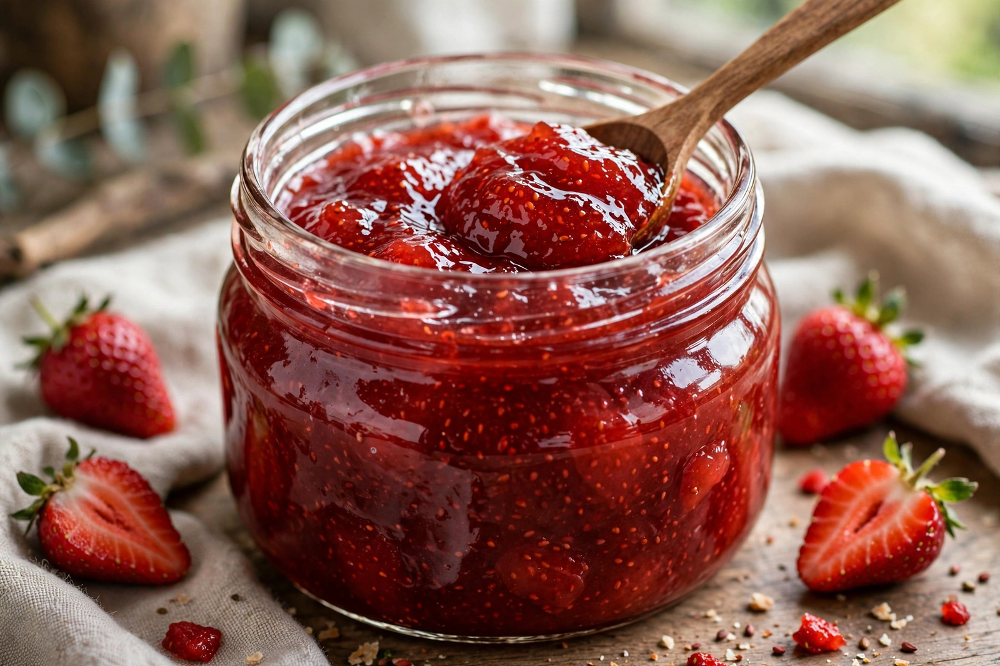

Wikipedia — the free encyclopedia

Jam is a type of fruit preserve made from fruit and sugar, boiled until it reaches a setting consistency. The fruit is often crushed or chopped, and the natural or added pectin helps the preserve gel as it cools. Jams are distinguished from jellies, which are made from juice only, and from marmalades, which traditionally use citrus fruit and include peel.
Fruit preserving with sugar became widespread as sugar grew cheaper in the 17th–19th centuries; commercial canning and later refrigeration made jam a household staple. Traditional jam is made with roughly equal weights of fruit and sugar; reduced-sugar and freezer jams use modified pectins. The European Union regulates the minimum fruit content of products sold as jam.
Jam is spread on bread, toast and scones, used as a filling for cakes, doughnuts and pastries, and served with cheese or yoghurt.